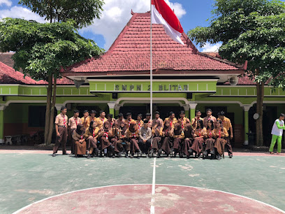

“
Terwujudnya peserta didik yang berkarakter, berprestasi, mandiri, dan peduli lingkungan.
Teks ini hanya contoh sementara, bukan visi resmi SMP Negeri 2 Kota Blitar. Ganti setelah mendapat dokumen resmi.
TENTANG SEKOLAH
Mengenal identitas, perjalanan, visi, misi, dan nilai yang menjadi arah pengembangan sekolah.
SEKILAS SEKOLAH
SMP Negeri 2 Kota Blitar adalah satuan pendidikan jenjang sekolah menengah pertama berstatus negeri yang berada di Kota Blitar, Jawa Timur. Halaman ini disiapkan sebagai ringkasan informasi dasar dan akan disempurnakan bersama pihak sekolah.
Sejarah pendirian, perkembangan sekolah, nama kepala sekolah, serta capaian institusi perlu dimasukkan berdasarkan dokumen atau keterangan resmi agar akurat.
Ganti paragraf ini dengan sejarah resmi sekolah setelah memperoleh informasi yang disetujui pihak sekolah.

Dokumentasi yang diberikan untuk demoARAH PENDIDIKAN
Bagian ini sengaja dibuat sebagai tempat penggantian konten setelah visi dan misi resmi dikonfirmasi.
Teks ini hanya contoh sementara, bukan visi resmi SMP Negeri 2 Kota Blitar. Ganti setelah mendapat dokumen resmi.
Seluruh poin di atas merupakan contoh sementara dan wajib diganti sesuai misi resmi sekolah.
NILAI PENDIDIKAN
Kejujuran, tanggung jawab, dan konsistensi dalam bertindak.
Belajar menghargai perbedaan dan bekerja sama.
Mengembangkan potensi melalui proses dan usaha yang berkelanjutan.
Menjaga lingkungan serta menghormati sesama.
Nilai di atas adalah contoh editorial untuk prototipe, bukan pernyataan resmi sekolah.
Jelajahi halaman akademik, kesiswaan, dan informasi sekolah.